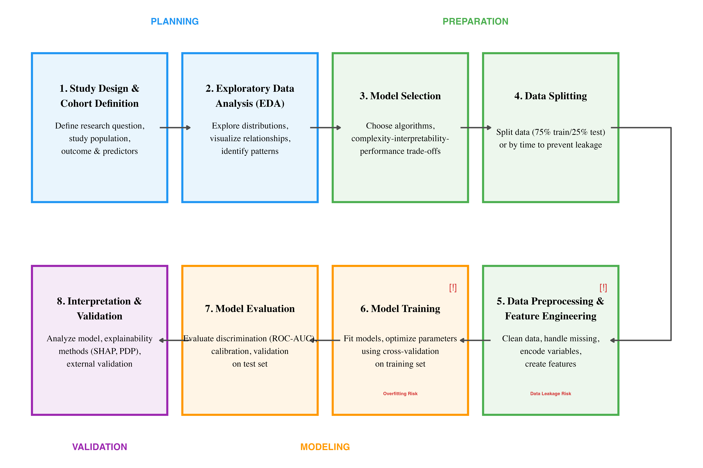
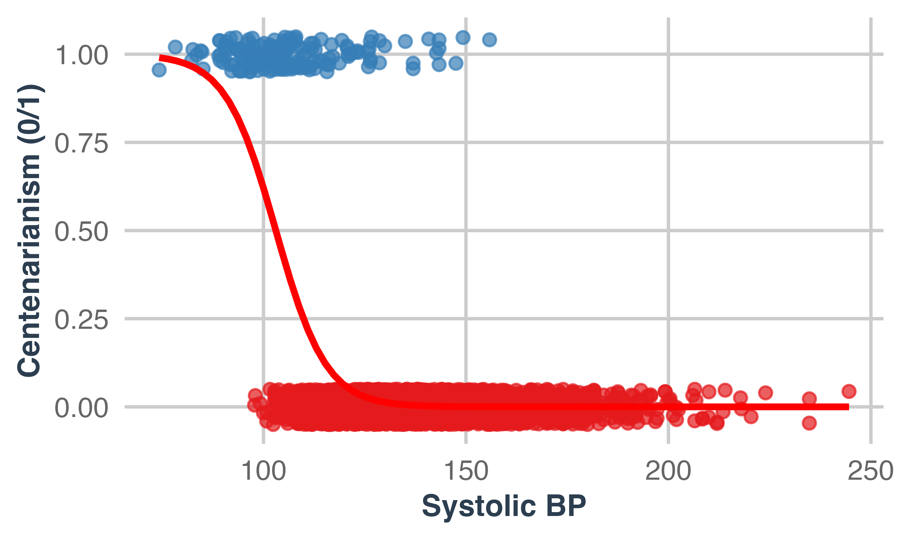
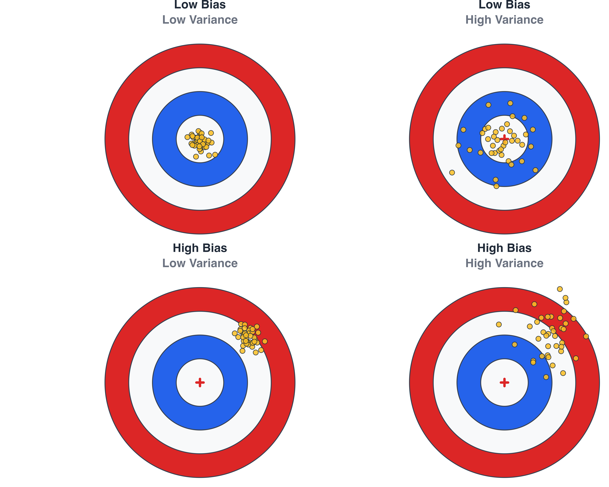
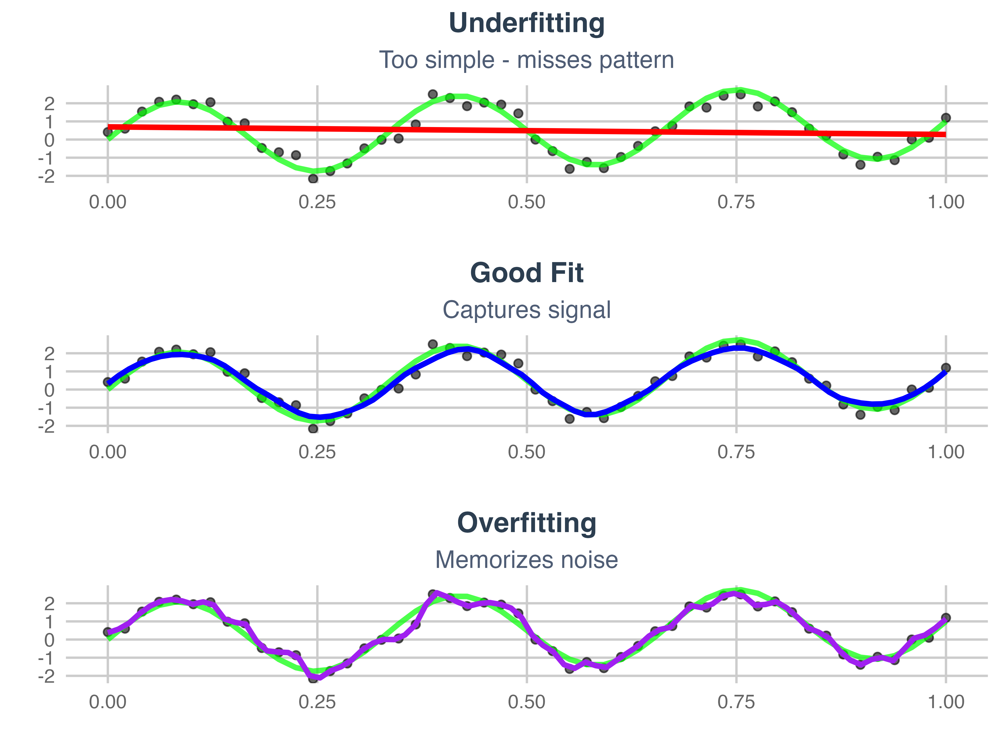
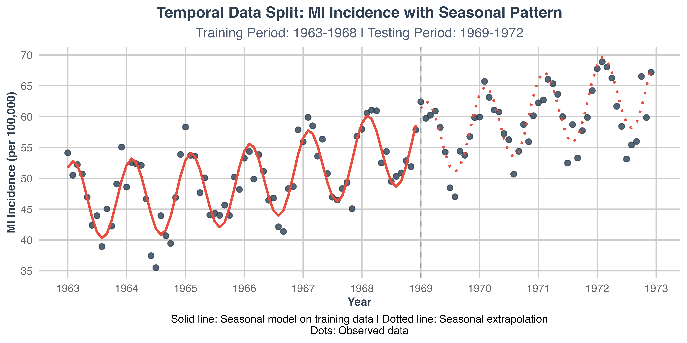
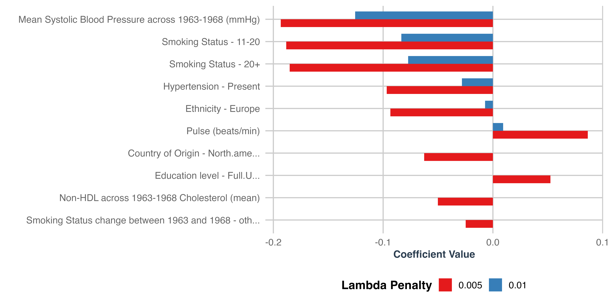
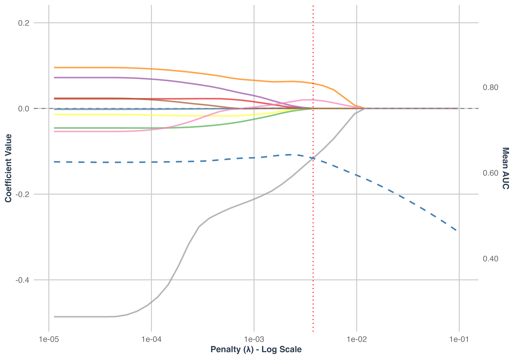
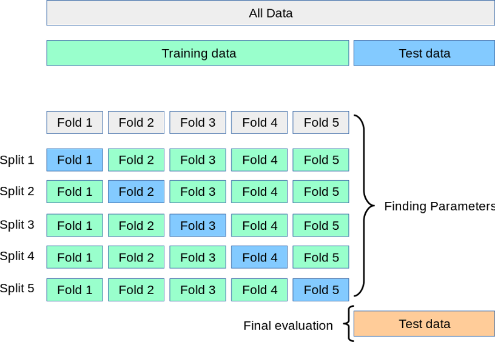

Machine Learning in Epidemiology
An Introduction with Case Study of Predicting Extreme Centenarianism
Dr. Dor Atias, MD-MPH
Tel-Aviv University
2025-10-08
Learning Objectives
By the end of this lecture, you will be able to:
- Distinguish between machine learning and traditional epidemiological approaches
- Understand core ML concepts: the ML workflow, models, overfitting, cross-validation
- Implement ML workflows using R and tidymodels
- Evaluate model performance using appropriate metrics
- Apply explainable AI tools to interpret complex models
- Recognize when ML is appropriate vs. traditional methods
- Create reproducible ML pipelines for public health applications
Why Machine Learning in Public Health?
What is Machine Learning?
“The field of study that gives computers the ability to learn without being explicitly programmed”
— Arthur Samuel (1959)
Prediction vs. Causation: Different Tools for Different Questions
Traditional Epidemiological Methods
Causal inference focus: understanding mechanisms
Clear parametric assumptions
Need for Pre-specified interactions
Linear relationships
Relatively parsimonious models
Interpretable coefficients
“Does smoking cause cardiovascular disease?”
Machine Learning Methods
Optimizing predictions
Flexible model assumptions
Discover unknown patterns and complex interactions
Non-linear relationships
High-dimensional datasets (Large p, p>N)
Complex models: “black box” by nature
“Who will develop cardiovascular disease?”
Important
Machine learning can also be used for causal inference, but this is outside the scope of this lecture
Why ML in Healthcare Now?
📊 The Data Revolution
Exponential Growth:
- Electronic health records everywhere
- Genomics becoming routine
- Wearable devices widespread
- High-resolution medical imaging
We’re drowning in data but starving for insights
🧩 Complex Medical Challenges
New Complexities:
- Multiple chronic conditions per patient
- Rare diseases being recorded
- High dimensional data
- Dynamic health trajectories
Traditional methods hit their limits
🎯 Personalized Medicine Era
Individual Focus:
- Risk assessment individualized
- Dosing optimized per person
- Genetic guided therapies
- Tailored prevention strategies
One-size-fits-all is obsolete
💻 Technology Enablers
Infrastructure Ready:
- Cloud computing democratized
- GPU processing power accessible
- Open-source tools proliferated
- Storage costs plummeted
The computational barrier dissolved
🧠 Machine Learning: The Perfect Bridge
🗂️ Handles High-Dimensional Data Thousands of variables? No problem.
🔍 Discovers Hidden Patterns Finds relationships humans miss.
⚙️ Automates Feature Learning Less manual engineering needed.
⚡ Scales with Data Growth More data = better performance.
Note
Before: We had either data OR computing power OR methods—never all three.
Now: Data explosion + cloud computing + ML algorithms = Healthcare transformation
Core Concepts of Machine Learning
Machine Learning Workflow for Epidemiological Research

Key Insight
When using machine learning it is not just algorithms, it’s a systematic process. Each step is crucial for success.
Train/Test Split: The Foundation
Why Do We Split Our Data?
The Fundamental Problem
- Goal: Build models that work on new, unseen patients
- Challenge: We only have the data we collected
- Solution: Simulate “unseen” data by holding some back
What Happens Without Proper Splitting?
- Overly optimistic performance: Model appears better than it really is
- Overfitting detection: Can’t tell if model learned noise vs. signal
- Poor generalization: Model fails when deployed in practice
How to Split: The 75/25 Rule (and variations)
Common Split Ratios:
- 75/25: Good balance for moderate sample sizes (n > 1,000)
- 80/20: When you have large datasets and need more training data
- 70/30: When you have smaller datasets and need robust testing
Special Considerations for Epidemiological Data
- Class Imbalance: Stratify splits to maintain outcome proportions
- Temporal Data: Use time-based splits to mimic real-world prediction
- Clustered Data: Split by site or cluster to avoid leakage
Supervised vs. Unsupervised Learning
Supervised Learning
“Learning with a teacher”
- Known outcomes (labels)
- Learn input → output mapping
- Like medical diagnosis training
- Examples: Predicting disease, mortality risk
Unsupervised Learning
“Finding hidden patterns”
- No known outcomes
- Discover structure in data
- Like organizing library without categories
- Examples: Patient clustering, pattern discovery, disease subtyping

Machine Learning Beyond LLMs
Machine learning and AI are not limited to the large language models (LLMs) everyone hears about today.
These methods have been part of science for decades and share many core ideas — optimization, loss functions, generalization.
In this lecture, we focus on supervised learning models, which use labeled data to predict outcomes and form the foundation of most predictive tools in epidemiology and public health.
Logistic Regression
Mathematical Foundation
Maximizes the likelihood function:
\[\text{Likelihood}(\theta) = -\frac{1}{m} \sum_{i=1}^{m} [y^{(i)} \log(\hat{y}^{(i)}) + (1 - y^{(i)}) \log(1 - \hat{y}^{(i)})]\]
Key Characteristics
- Linear assumption: Assumes linear relationship between predictors and log-odds
- High interpretability: Coefficients have direct clinical meaning
- Reseachers involvement: Manual variable selection and interactions
- Cannot handle missing data: Needs complete cases or imputation
- Limited to p < N scenarios: Not suitable when predictors exceed observations
| Predictor | Odds Ratio | 95% CI Lower | 95% CI Upper | P-value |
|---|---|---|---|---|
| Intercept | 0.629 | 0.283 | 1.395 | 0.254 |
| Systolic Blood Pressure | 1.018 | 1.013 | 1.023 | < 0.001 |
| med_smoke_statusex-smoker | 1.101 | 0.884 | 1.371 | 0.391 |
| med_smoke_status1-10 | 0.931 | 0.752 | 1.153 | 0.512 |
| med_smoke_status11-20 | 2.213 | 1.703 | 2.876 | < 0.001 |
| med_smoke_status20+ | 2.071 | 1.627 | 2.635 | < 0.001 |
| Myocardial Infarction | 0.905 | 0.683 | 1.199 | 0.487 |
| Diabetes Mellitus | 1.110 | 0.825 | 1.494 | 0.491 |
| Body Mass Index | 1.015 | 0.990 | 1.041 | 0.235 |
Loss Function: “The Cost of Being Wrong”
Model training = Optimization. In classical stats we maximize likelihood. In ML we typically minimize a loss.
What is a Loss Function?
Definition: Quantifies how much we “pay” for incorrect predictions
Likelihood rewards models that assign high probability to what actually happened
Negative log converts that into a penalty: smaller is better
Logistic regression training = minimizing log-loss on training data
Guides model optimization: Algorithm minimizes this cost
Different costs for different errors: False positives vs. false negatives
Medical context: Missing cancer (high cost) vs. false alarm (lower cost)
Logistic Regression Loss Function
For binary classification (like Centenarianism prediction):
\[\text{Loss} = -\frac{1}{n} \sum_{i=1}^{n} [y_i \log(p_i) + (1-y_i) \log(1-p_i)]\]
Where: - \(y_i\) = actual outcome (0 or 1) - \(p_i\) = predicted probability - \(n\) = number of observations
Intuition: - When \(y_i = 1\) and \(p_i\) is small → Large penalty - When \(y_i = 0\) and \(p_i\) is large → Large penalty - Perfect predictions → Zero loss
Key Insight
The loss function directly shapes what the model learns. Choose wisely based on your clinical priorities!
LASSO Regression (Least Absolute Shrinkage and Selection Operator)
Mathematical Foundation
LASSO adds a regularization term to penalize coefficient magnitude:
\[\text{Cost}(y, \hat{y}) = -\frac{1}{m} \sum_{i=1}^{m} [y^{(i)} \log(\hat{y}^{(i)}) + (1 - y^{(i)}) \log(1 - \hat{y}^{(i)})] + \lambda \sum_{j=1}^{n} |\beta_j|\]
Key Characteristics
- Automatic feature selection: Shrinks unimportant coefficients to zero
- Regularization: λ hyperparameter controls shrinkage amount
- Handles high-dimensional data: Can work when p > N
- Cross-validation tuning: Uses CV to select optimal λ
- Maintains interpretability: Similar to logistic regression
Advantages Over Standard Logistic Regression
- Prevents overfitting through regularization
- Automatically selects relevant variables
- Handles multicollinearity better
- Works with high-dimensional datasets
Mathematical Penalty
\[\text{Total Cost} = \text{Loss Function} + \lambda \times \text{Penalty}\]
- \(\lambda\) (lambda): Regularization strength
- Higher \(\lambda\) = More aggressive pruning
- Tuned using cross-validation
Regularization
The Regularization Concept
Core Idea: Prevent overly complex models
- Occam’s Razor: Simpler explanations are usually better
- Biological basis: Parsimonious models often generalize better
- Prevents overfitting: Stops model from memorizing noise
Types of Regularization
LASSO (L1): - Shrinks coefficients toward zero - Variable selection: Can set coefficients exactly to zero - Creates sparse models
Ridge (L2): - Shrinks all coefficients toward zero - Keeps all variables but reduces their impact - Good when all predictors are somewhat relevant
Elastic Net: - Combines LASSO and Ridge - Balances variable selection with coefficient shrinkage

The Bias-Variance Trade-off
Key Concepts
Bias: measures how far off, on average, a model’s predictions are from the ground truth values.
Variance: measures how much a model’s predictions change with different training datasets
Overfitting occurs when variance is high
Underfitting when bias is high Sweet spot: Balanced complexity for your data

The Overfitting Problem (Student Learning Analogy)
Definition: Model learns noise instead of signal
Memorizer (Overfitted):
Knows textbook word-for-word
Can’t answer new questions
Fails when context changes
Excellent on practice tests - Poor on real exam
Understander (Well-fitted):
Grasps underlying concepts
Applies knowledge to new situations
Adapts to different contexts
Good on both practice and real tests
Overfitting: “Memorizing vs. Understanding”
Warning Signs
- Perfect training scores: Usually too good to be true
- Large gap: Training accuracy >> Test accuracy
- Complex model: Too many parameters for data size
- Unstable predictions: Small data changes → big prediction changes
Prevention Strategies
Validation: Hold out test data
Cross-validation: Multiple honest estimates
Regularization: Penalize complexity
Early stopping: Stop before overfitting begins

Remember: Overfitting is ML’s Greatest Enemy
Always validate on truly unseen data. If it seems too good to be true, it probably is!
Decision Trees
Key Characteristics
- Non-parametric architecture: No assumptions about data distribution or linear relationships
- Recursive splitting: Algorithm selects the variable and split point that maximizes information gain
- Stopping criteria: Controlled by minimum samples per node, maximum depth, and complexity parameters (hyperparameters)
- Handles mixed data types: Works with both continuous and categorical predictors natively
- Automatic interaction detection: Naturally captures variable interactions through hierarchical splits
- Interpretable: Easy to understand and explain to clinicians
- Prone to overfitting: Thus, rarely used alone for prediction

Descision Trees - under the hood
Mathematical Foundation
Decision trees split data using decision criteria, similar to clinical flowcharts, to create homogeneous (pure) groups with each split. Common metrics include Gini impurity, enthropy and information gain.
\[\text{Total Gini} = \sum{j=1}^{L} \frac{N_j}{N} \times \left(1 - \sum_{i=1}^{c} p_{ij}^2\right)\]
Where:
\(L\) = number of leaf nodes in the tree; \(N_j\) = number of samples in leaf node \(j\); \(N\) = total number of samples in the dataset; \(1 - \sum_{i=1}^{c} p_{ij}^2\) = Gini impurity of leaf node \(j\); \(c =\) the number of classes; \(p_{ij}\) = proportion of class \(i\) in leaf node \(j\)
Mathematical Intuition
Gini = 0: Perfect classification (all samples same class)
Gini = 0.5: Maximum impurity for binary classification (50-50 split)
Perfect tree: Total Gini = 0 (all leaves are pure)
No splits: Total Gini = original root Gini
Larger leaves contribute more to the total impurity due to weighting by \(\frac{N_j}{N}\)
Random Forest: Wisdom of the Crowd
Key Characteristics
Bootstrap Aggregating (Bagging): - Create many bootstrap samples from training data - Train decision tree on each sample - Use random subset of features at each split - Average predictions across all trees
Feature Randomness: At each split, consider only \(\sqrt{p}\) randomly selected features (where \(p\) = total features)
Key Innovation: Combines variance reduction (bagging) with feature randomness
Mathematical Foundation
Ensemble Prediction: \[\hat{y} = \frac{1}{B} \sum_{b=1}^{B} \hat{f}_b(x)\]
Where \(\hat{f}_b\) is the \(b\)-th tree trained on bootstrap sample
Variance Reduction: \[\text{Var}(\bar{X}) = \frac{\sigma^2}{n} \text{ (if trees independent)}\]
eXtreme Gradient Boosting (XGBoost)
Algorithm Overview
XGBoost employs sequential ensemble learning where each tree corrects errors from previous learners, building weak decision trees that collectively form a powerful predictor.
Key Innovation: Unlike simple decision trees that make single predictions, gradient boosting sequentially trains multiple trees where each corrects errors from previous ones, while XGBoost enhances this with similarity scores and built-in regularization.
Key Characteristics
- Ensemble method: Combines multiple weak learners sequentially
- Gradient boosting: Each tree learns from previous trees’ errors
- Built-in regularization: λ (lambda) prevents overfitting by shrinking similarity scores
- Automatic pruning: γ (gamma) removes branches that don’t improve gain sufficiently
- Built-in feature selection: Automatically prioritizes important variables
- Handles missing data: Native missing value support without imputation
- Complex relationships: Captures non-linear patterns and interactions
eXtreme Gradient Boosting (XGBoost)
Advantages in Epidemiology
- Excellent predictive performance with complex health datasets
- Handles large, high-dimensional data common in electronic health records
- Automatic interaction detection between risk factors
- Robust to outliers and missing data (crucial for real-world medical data)
Limitations
- Black box nature: Requires post-hoc explanation methods (SHAP)
- Computational intensity: More resources than simpler models
- Hyperparameter sensitivity: Multiple parameters (η, λ, γ, max_depth) require tuning
- Overfitting risk: Despite regularization, still needs careful cross-validation
XGBoost - under the hood
How XGBoost Works
Step 1: Start with initial prediction (typically 0.5)
Step 2: Calculate pseudo-residuals (errors from previous predictions)
Step 3: Build trees to predict residuals using similarity scores: \(\text{Similarity} = \frac{(\sum \text{residuals})^2}{\text{number of residuals} + \lambda}\)
Step 4: Use gain to find optimal splits: \(\text{Gain} = \text{Similarity}_{\text{left}} + \text{Similarity}_{\text{right}} - \text{Similarity}_{\text{root}}\)
Step 5: Prune using gamma (complexity parameter)
Step 6: Scale by learning rate (η) and repeat
Key Mathematical Concepts
Similarity Scores: When residuals are similar, they don’t cancel out → high similarity score. When residuals are different, they cancel out → low similarity score.
Learning Rate (η): Takes “small steps in the right direction” - empirical evidence shows many small steps outperform few large steps.
Regularization Effects:
- Lambda (λ) > 0: Shrinks similarity scores → easier pruning → prevents overfitting
- Gamma (γ): Sets minimum gain threshold for splits → controls tree complexity
XGBoost - under the hood

Common XGBoost Hyperparameter

Hyperparameters: “Adjusting the Recipe”
What are Hyperparameters?
Hyperparameters are configuration settings that we must specify before training a machine learning model begins. “recipe settings” - like oven temperature and cooking time - that control how your algorithm learns from data.
Key Characteristics:
- Not learned from data: We set them manually based on experience or systematic testing
- Control the learning process: They determine how the algorithm behaves during training
- Model-specific: Different algorithms have different hyperparameters
- Critical for performance: Poor hyperparameter choices can lead to suboptimal models
Examples in Epidemiology:
- LASSO regression: The penalty parameter (λ) that controls how much we shrink coefficients
- Random Forest: Number of trees, maximum tree depth, minimum samples per leaf
- XGBoost: Learning rate, tree depth, number of boosting rounds
How Hyperparameters Affect Model Behavior
Impact on Model Performance
Hyperparameters directly influence critical aspects of your model:
capacity, , bias–variance tradeoff, and
Bias-Variance Trade-off
Risk of overfitting
Speed of learning
Computational Requirements
PALCEHOLDER FOR IMAGE - how cariables shrink with LASSO
Hyperparameters: How to Tune Them?
Step 1: Define the Search Space
- Grid Search: Test specific combinations systematically
- Good for: Few hyperparameters, small search spaces
- Example: Testing λ values [0.001, 0.01, 0.1, 1.0, 10.0]
- Random Search: Sample randomly from the hyperparameter space
- Good for: High-dimensional spaces, when some hyperparameters matter more than others
- Often outperforms grid search with same computational budget
- Bayesian Optimization: Use previous results to guide next choices
- Good for: Expensive model training, when each evaluation takes significant time
- Efficiently samples near promising regions
Hyperparameters: How to Tune Them?
Step 2: Choose Evaluation Strategy
- Cross-validation: Most robust for estimating performance
- Hold-out validation: Simpler but less reliable
Step 3: Select Optimization Metric
Choose based on your epidemiological context:
Screening tools: Prioritize sensitivity (catch all cases)
Confirmatory tests: Prioritize specificity (avoid false alarms)
Rare diseases: Use Precision-Recall AUC instead of ROC-AUC
Risk prediction: Consider calibration alongside discrimination
How to Choose Hyperparameter Ranges
PLACEHOLDER: Discuss domain knowledge, prior studies, and practical considerations in setting realistic ranges for hyperparameters.
Cross-Validation: Beyond Simple Splitting
What Is Cross-Validation?
Cross-validation (CV) divides your training data into multiple folds to get more robust estimates of model performance during hyperparameter tuning.
How K-Fold Cross-Validation Works
- Divide training data into k equal parts (typically k=5 or k=10)
- For each hyperparameter combination:
- Train model on k-1 folds
- Test on the remaining fold
- Repeat k times (each fold serves as validation once)
- Average performance across all k tests

Why Cross-Validation Helps
1. Reduces Overfitting to Validation Set
- Single train/validation split might be lucky/unlucky
- CV averages across multiple validation sets
- More robust hyperparameter selection
2. Better Use of Limited Data
- Every observation serves as both training and validation data
- Particularly important in epidemiology where data collection is expensive
3. Provides Uncertainty Estimates
PALCEHOLDER FOR IMAGE
Performance Metrics: Choosing the Right Measure
Understanding Your Epidemiological Context
The choice of performance metric should align with your clinical goals and the characteristics of your outcome.
Types of Metrics
- Discrimination: Can the model rank patients by risk?
- Classification: At a specific threshold, how well do we classify patients?
- Calibration: Are the predicted probabilities accurate?
Discrimination Metrics: “Can the model rank patients by risk?”
ROC-AUC (Area Under Receiver Operating Characteristic Curve)
- Range: 0.5 (random guessing) to 1.0 (perfect discrimination)
- Interpretation: Probability that model ranks a random case higher than a random control
- Good for: Balanced outcomes, general screening tools
- Clinical use: Risk stratification, identifying high-risk patients
- Ranges: <0.6 poor, 0.6-0.7 fair, 0.7-0.8 good, 0.8-0.9 very good, >0.9 excellent
PALCEHOLDER FOR IMAGE - ROC curve
Discrimination Metrics: “Can the model rank patients by risk?”
Precision-Recall AUC
- Better than ROC-AUC when outcome is rare (< 10% prevalence)
- Precision: Of those flagged as high-risk, how many truly are? (PPV)
- Recall: Of all true cases, how many did we catch? (Sensitivity)
- Clinical use: Rare disease screening, adverse event prediction
- Ranges: Higher is better; Cutoffs depend on outcome prevalence
PALCEHOLDER FOR IMAGE - PR curve
Classification Metrics: “At a specific threshold, how well do we classify?”
1. Sensitivity (Recall, True Positive Rate)
- Formula: TP / (TP + FN)
- Clinical question: “Of all people with the disease, how many did we correctly identify?”
- Priority when: Missing cases is very costly (cancer screening, infectious disease outbreaks)
2. Specificity (True Negative Rate)
- Formula: TN / (TN + FP)
- Clinical question: “Of all healthy people, how many did we correctly identify as healthy?”
- Priority when: False alarms are costly (invasive procedures, patient anxiety)
3. Positive Predictive Value (Precision)
- Formula: TP / (TP + FP)
- Clinical question: “Of those we flagged as positive, how many actually have the disease?”
- Affected by: Disease prevalence in population
- Clinical use: Informing patients about test results
4. Accuracy
- Formula: (TP + TN) / (TP + TN + FP + FN)
- Clinical question: “Overall, how many did we classify correctly?”
- Limitation: Can be misleading with imbalanced outcomes
- Use with caution: Prefer sensitivity, specificity, PPV in clinical contexts
Calibration Metrics: “Are the predicted probabilities accurate?”
Why Calibration Matters
If your model predicts 20% risk, do 20% of those patients actually develop the outcome? This matters for:
Shared decision-making with patients
Treatment thresholds based on risk levels
Resource allocation based on predicted burden
Brier Score
- Formula: Mean squared difference between predicted probabilities and actual outcomes
- Range: 0 (perfect) to 1 (worst)
- Interpretation: Overall prediction accuracy including confidence levels
Calibration Metrics: “Are the predicted probabilities accurate?”
Calibration Intercept and Slope
- Perfect calibration: Intercept = 0, Slope = 1
- Slope > 1: Overconfident predictions (too extreme)
- Slope < 1: Underconfident predictions (too conservative)
PALCEHOLDER FOR IMAGE - Calibration plot
Model Comparison Summary
Table 1. Comparison of data analysis algorithms
| Aspect | Logistic Regression (LR) | LASSO | XGBoost |
|---|---|---|---|
| Variable selection | Manual; relies on researcher’s expertise. | Automatically shrinks some coefficients to zero. | Selects variables by contribution to the loss function during training. |
| Interactions | Must be prespecified by the researcher. | Same as LR. | Captured automatically within tree structures. |
| Linearity | Assumes linearity (extendable via polynomials/splines). | Similar to LR; allows some non-linearity. | Handles non-linearity well; invariant to monotonic transformations. |
| Missing data | Requires imputation or removal before modeling. | Same as LR. | Handles missing data natively via optimal split direction. |
| Variable transformation | Continuous variables may need scaling; categorical require one-hot encoding. | Same as LR. | Only categorical variables require one-hot encoding. |
| Overfitting | Low risk but no built-in control. | Reduces overfitting via coefficient shrinkage. | Controlled by internal regularization and sequential weak learners. |
| Interpretability | High interpretability. | High interpretability. | Low; requires explainable AI tools (e.g., SHAP). |
| Large number of variables | Inefficient when p > N. | Handles high-dimensional data (p > N). | Handles high-dimensional and complex data well. |
| Large number of samples | Computationally efficient. | Moderate computational cost. | Computationally intensive. |
ML in Epidemiology | Advanced statistical methods